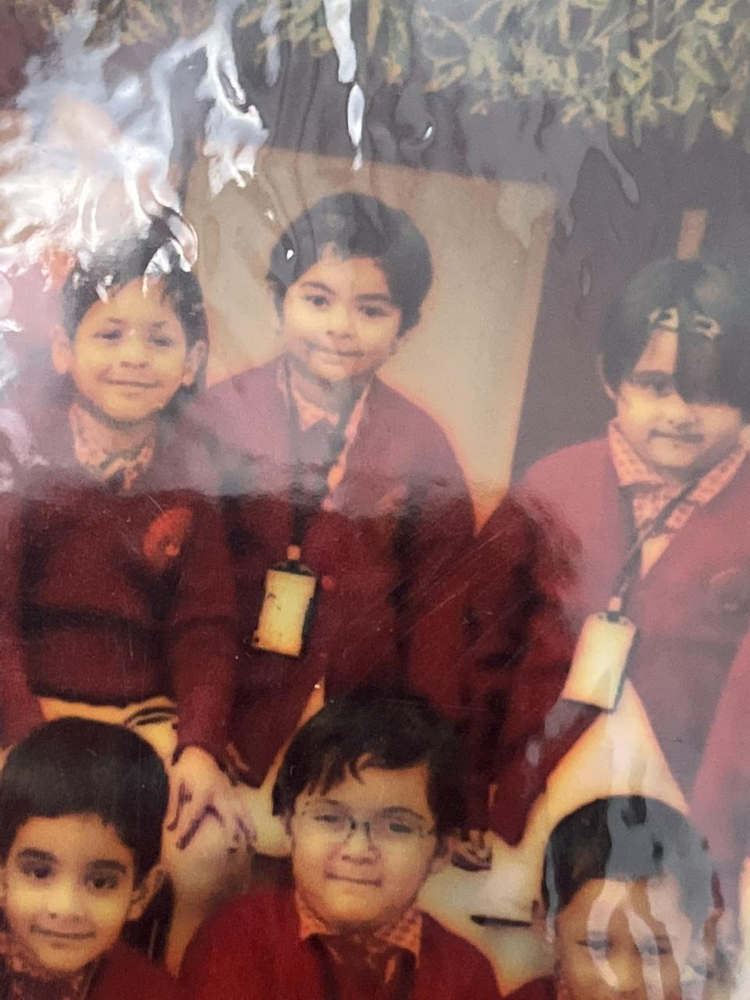
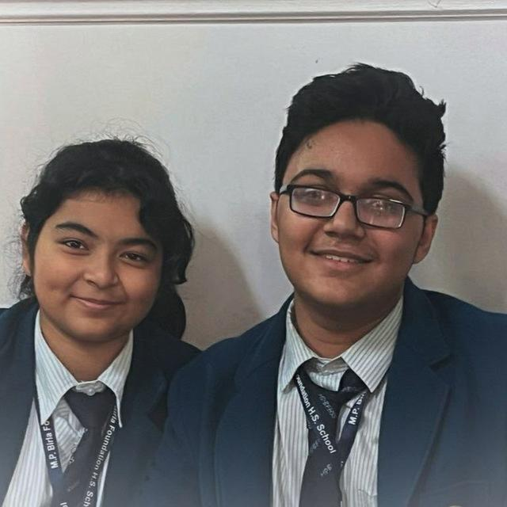
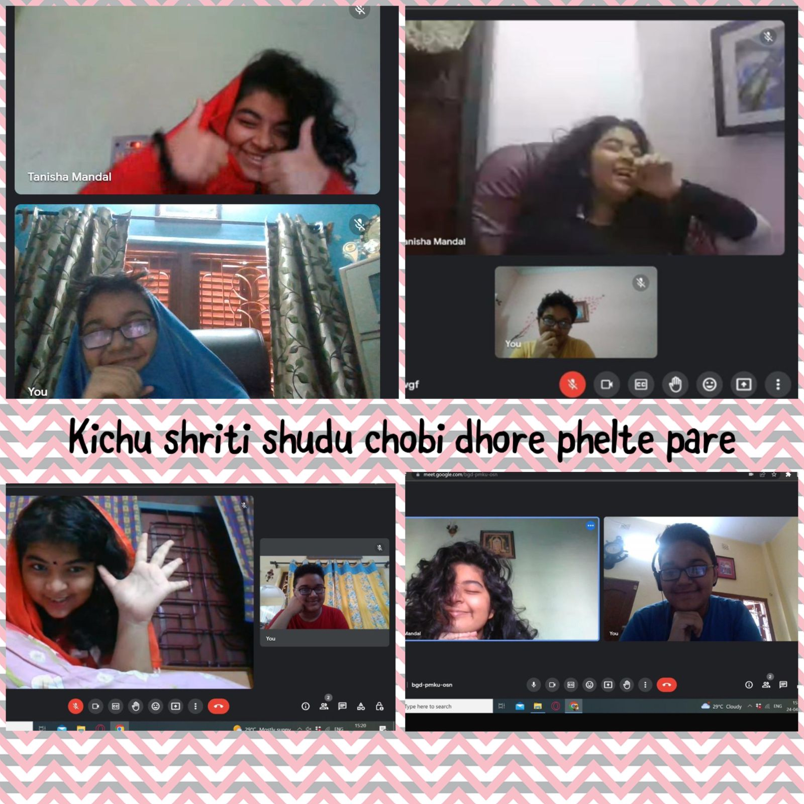
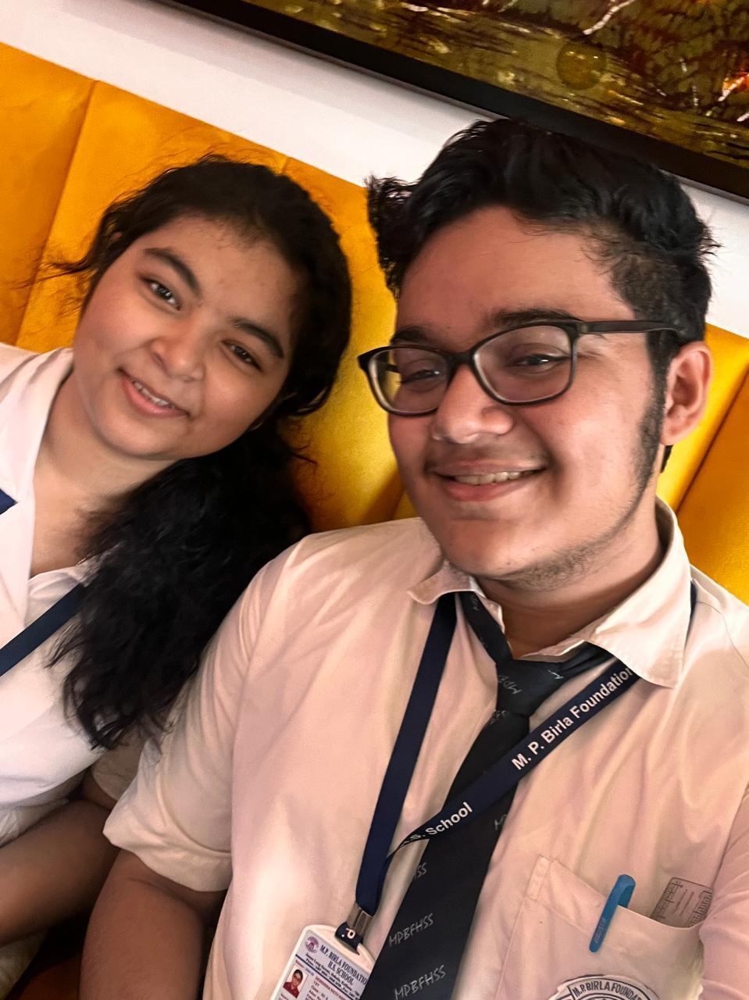
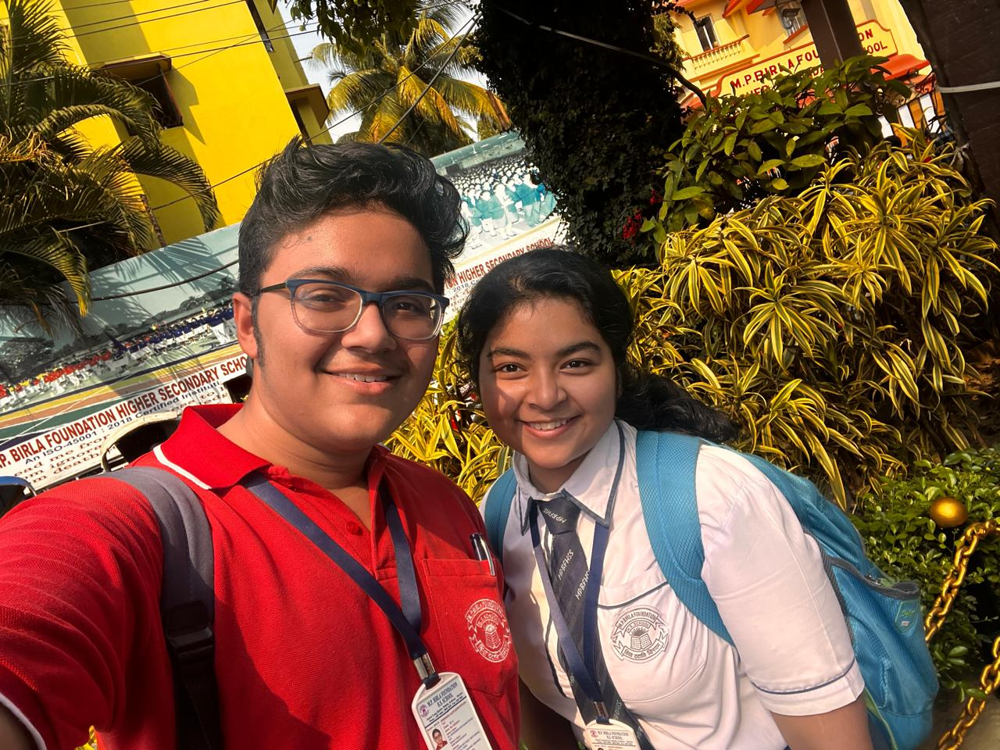
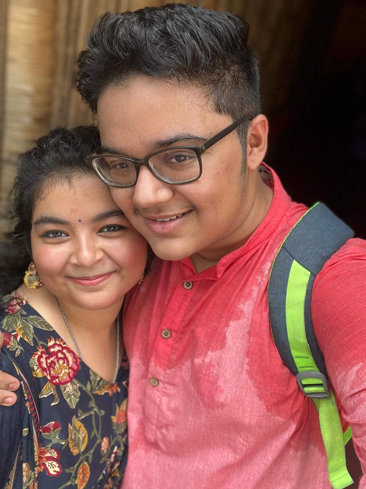
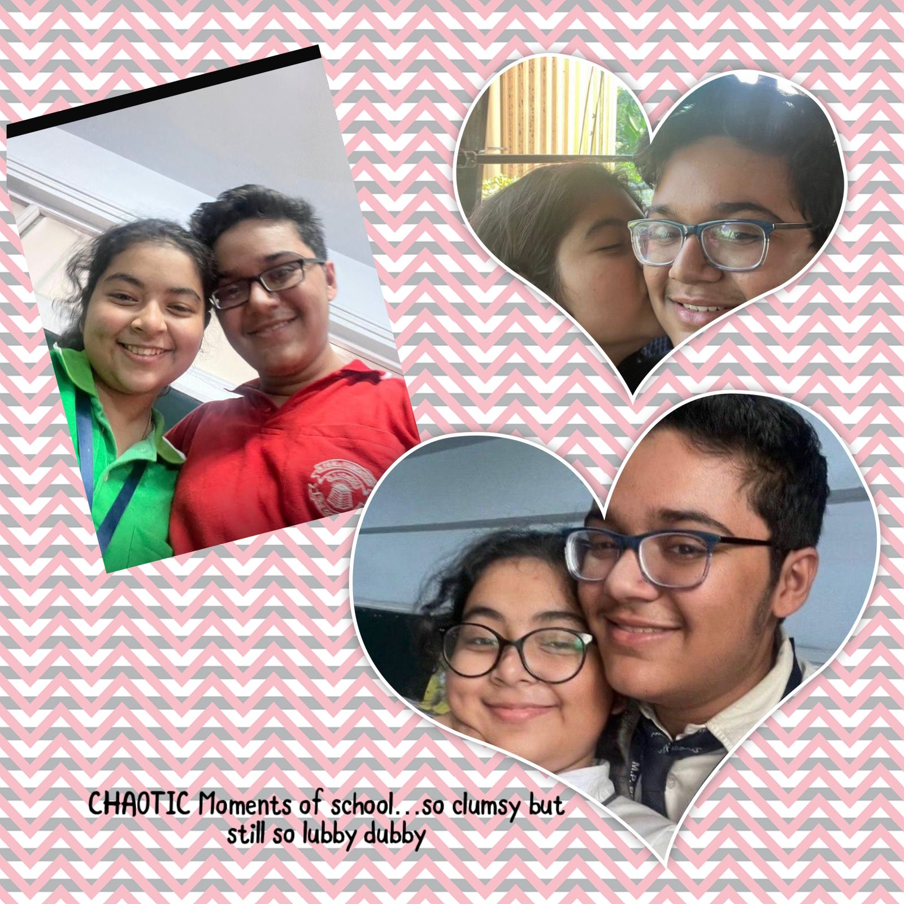
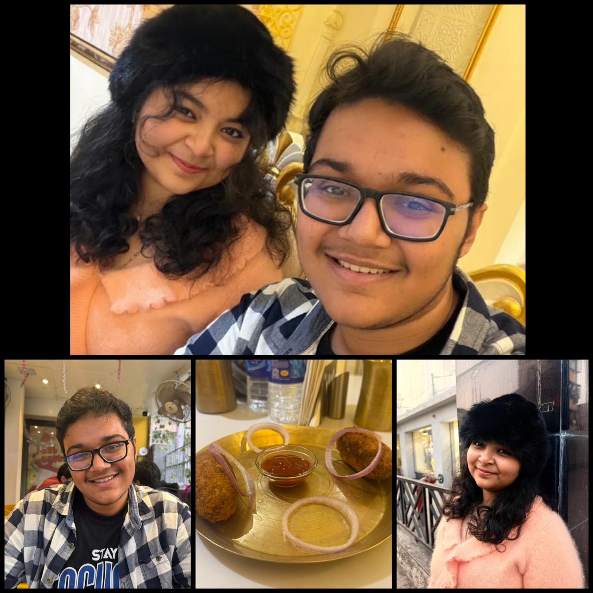

Happy Valentine’s Day, Tanisha ❤️
OPORE CLICK KORE DEKHHH KI KI BANALAMMMMMMMMMMMMMM HEHEHHE

Amader jibon....hehe
So....1211 and the time u will get it will be 1212 days of us being together..Kinda wierd and suprising number and whatever..umm lets start from the beginning...the very beggining??okay lets go
So It all started from a class 4 morning..when in the assembly hall ami toke dekhlam ar janina ki holo jeta ami konodin bojhate parbona... That feeling was very new and different to me and I still don't have any words to explain it..nvm GOD heard me and we GOT THE SAMEEE SECTION IN CLASS 5..BUT sadly I am a introvert and so I couldn't speak to you for even once in the entire year.. But I did manage to stare at u in a cute way (sorry if it felt creepy)then LETS JUST JUMP INTO CLAS 10!!!!!!!!!.THE BEST YEAR OF MY LIFE
SO They class were it all happened...from being friends to helping u to do maths work to telling "ur prescense is a gift for me" to talking for hours about our life and broken friendships to being besties and finally on 21/10/22...THE DAY WHEN It all happened ..We both proposed each other and held hands to step into this new thing called "RELATIONSHIP" ,they one which class 5 ribhu ever dreamt of had become a reality now..I still get shivers when I say it babe..Oh I love you so much Tanisha...nvm lets not get off topic.LETS MOVE INTO A NEW CHAPTER OF MOMENTS CUZ I THINK YOU ARE BORED OF READING THE SAME STORY AGAIN AND AGAIN AND AGAIN!!!!!!!
Kichu moner kacher muhorto
Kichu meet er mohurto jegulo prottek ta ekta din er kotha nijer moton expalin kore jeta shudu amar ar tor jonno kacher ..
AMADER FIRST DATE AT "BONG AND BEAUTIES" ...That grilled chicken of ur choice was so tender and tasty..We were also given a student discount...and you fed me hehehe...Felt like a childdddd
OUR second date..sorry for underwhelming you this time (doing in most special moments throughtout our relationship)we had hotdog from monginis but still we loved the moments spent and you devoured the ice cream I gave you like the wings i had made for you (I am again going out of conetext..)
US SNEAKING OUT!!!!!!!!!!!! IN DURGA PUJAAA.....ETA is one of the best moments I ever had with you Tanisha...it was so short but so fulfilling and remember tor relative er satheo dekha hoye gachilo lol..
NOW THE PLACE WHERE EVERDAY WAS A DATE FOR US ..school!!!!!!!... sob jhogra ma pit bhalobasha first hat dhora assembly hall er backstage e kiss theke kanna kati theke suit saree pore seshe chobi tola jekhane hoyechilo....janina how much grateful I am to have you in my life and in the same section...maybe class 5 e same sec na hole egulo kichui hotona ....but maybe its all GOD'S PLAN
Just one word..farewell

Our second durga puja date!!!!!!!..well it was so special on its own..us meeting after 4 months and we had so much fun..also on the back seat of the car .............heheh.....

COMING TO END with our last date (ik aro hazar moments ache but tui bore hoye jabi and amar pith e akhon khub lagchee) ..It was a very very short date but we had fun and babar sathe dekhao holo tor and toke georgia r gift tao dilam as well...
SO WITH THIS THE MOMENTS END AND WE MOVE ON TO THE LAST STAGE...FUTUREEEEE.
Now & Future
From silly jokes to breaking walls,
We didn’t know where love would be,
Yet it quietly chose you and me.
We somehow always stayed right here,
The world may change, the days may run,
But you’ll remain my only one.
Different paths we come to know,
Still hand in hand we’ll always stay,
Choosing each other every day.
I’ll still be yours and you’ll be mine,
No matter what the future brings,
We’ll be each other’s little things ❤️